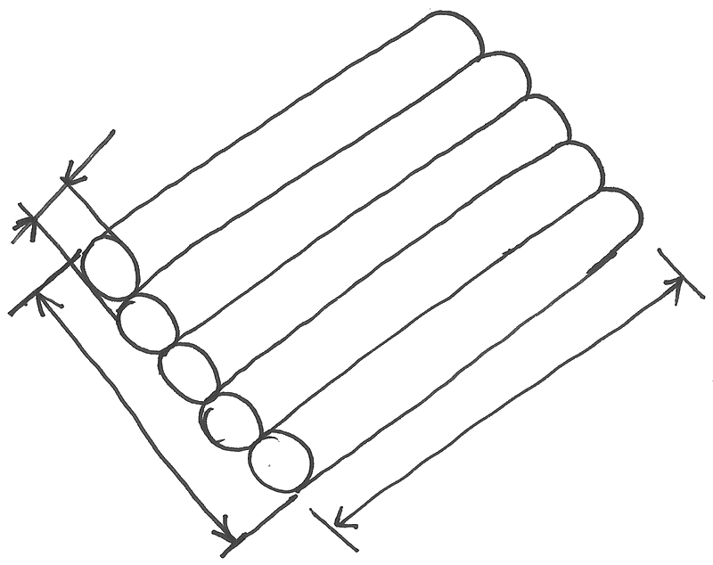

⬅ La carte du réseau · tronc commun · pour le froid et la clim en cours de relecture
Une installation frigorifique existe, mais personne n'en a le plan. Avant de la modifier, de la dépanner ou de la chiffrer, on la croque et on la relève. Cette gare dure environ 2 heures. À la fin, vous saurez :
Prérequis : les gares 7 (la cotation) et 8 (le croquis coté). Dans cette gare, vous apprenez les règles et vous voyez un exemple résolu ; la pratique se fera en projet, en classe, sur l'installation de l'atelier.
| Situation | Ce que le croquis apporte |
|---|---|
| Un dépannage | le tracé des liaisons et l'emplacement de chaque organe, sans fouiller |
| Une modification | la place disponible et les longueurs pour ajouter un évaporateur |
| Un devis | les longueurs de tube et les quantités à commander |
| Le dossier d'ouvrage | une trace de l'installation telle qu'elle est |
Le croquis est le plan qui manque. Il n'a pas à être joli ; il doit être exploitable : un autre que vous doit pouvoir s'en servir.
| Croquis | Il répond à… | Vue |
|---|---|---|
| L'ensemble | où sont le groupe, l'évaporateur, les murs et les passages ? | de dessus |
| La liaison | par où passent les tubes ? quelles longueurs, quelles hauteurs ? | de côté (ou isométrie, gare 13) |
| Le détail | comment est fait ce point : support, traversée de mur, raccord ? | de près, une seule pièce |
Un croquis = une question. Ne mettez pas tout sur la même feuille : une feuille encombrée n'est plus lisible.
Ce sont celles de la gare 8, dans le même ordre :
| Étape | Sur une installation frigorifique |
|---|---|
| 1. Les axes | le sol, le mur, le plafond : traits légers, ils portent tout le reste |
| 2. Les contours | le groupe et l'évaporateur en simples boîtes, bien proportionnées |
| 3. Les détails | les liaisons, les supports, les vannes, la traversée du mur |
| 4. Les cotes | les dimensions utiles d'abord (écran 5) |
| 5. La légende | les repères : G1, E1, L, G (écran 7) |
| 6. La mention | « sans échelle », votre nom, la date |
Dans cet ordre. Celui qui cote avant d'avoir fini les contours écrit ses cotes dans son dessin.
Pour chaque élément, vous notez ce qui sert vraiment. Une valeur lue sur la plaque est écrite L ; une valeur mesurée est écrite M.
| Élément | À relever |
|---|---|
| L'unité de condensation (le groupe, dehors ou dans un local) | dimensions (longueur, profondeur, hauteur) · hauteur de pose et type de support · distance au mur · plaque signalétique : marque, modèle, fluide, charge (L) |
| L'évaporateur (dans la chambre) | dimensions · hauteur sous plafond · distance au mur et à la porte · plaque signalétique (L) |
| Les liaisons | diamètre du petit tube (liquide) et du gros tube (gaz) · longueur le long du tracé, détours compris · dénivelé · isolant · position de la traversée de mur |
| Les autres organes | vannes, filtre déshydrateur, voyant : repère, place sur la ligne, sens |
La plaque signalétique se lit, elle ne se devine pas. Si une valeur n'y est pas, vous la mesurez et vous écrivez M.
Pour la longueur et le dénivelé d'une liaison : la station Les liaisons frigorifiques : longueur, dénivelé, isolant (CartoClim).

Comme en gare 7 : une cote ne se recalcule pas à l'œil. Un croquis sans cotes ne peut pas dépasser le niveau 1 sur l'échelle 0 à 4.
Chaque élément reçoit un repère, écrit sur le croquis et dans le carnet :
| Repère | Élément |
|---|---|
| G1 | l'unité de condensation (le groupe) |
| E1 | l'évaporateur de la chambre |
| L | la liaison liquide, le petit tube (trait plein fin) |
| G | la liaison gaz, le gros tube (trait plein épais) |
Les mêmes repères que dans la ligne bureau d'études CVC (gare 1) : tout repère du croquis est dans le carnet, et tout ce qui est dans le carnet est sur le croquis.
Le croquis d'exemple, vue de côté, sans échelle. Les valeurs sont des valeurs d'école.
| Repère | Ce que j'ai relevé | Valeur | L ou M |
|---|---|---|---|
| G1 | hauteur de pose (le dessus du support) | 0,60 m | M |
| G1 | distance au mur | 0,50 m | M |
| L, G | hauteur de la traversée de mur | 2,10 m | M |
| E1 | hauteur sous plafond de la chambre | 2,70 m | M |
| G1 | fluide frigorigène | lu sur la plaque | L |
Regardez comment l'exemple respecte la méthode : axes d'abord (sol, mur, plafond), boîtes proportionnées, tubes et traversée, cotes utiles, repères, mention « sans échelle ».
Répondez à tout, votre score s'affiche en bas.
Trois croquis, six étapes, des cotes utiles, des repères, un carnet de relevé : vous savez croquer et relever une petite installation frigorifique.
📄 Télécharger la fiche de projet (PDF)
Pour l'enseignant : corrigé et grille dans corrige.pdf. La fiche se remplit en projet, sur l'installation de l'atelier : croquis, carnet de relevé, auto-contrôle. La gare donne les règles et l'exemple résolu.
Pictogrammes : collection QElectroTech (CC BY 3.0), adaptés par inerWeb — F. Henninot. Croquis des tubes : fonds de cours inerWeb.